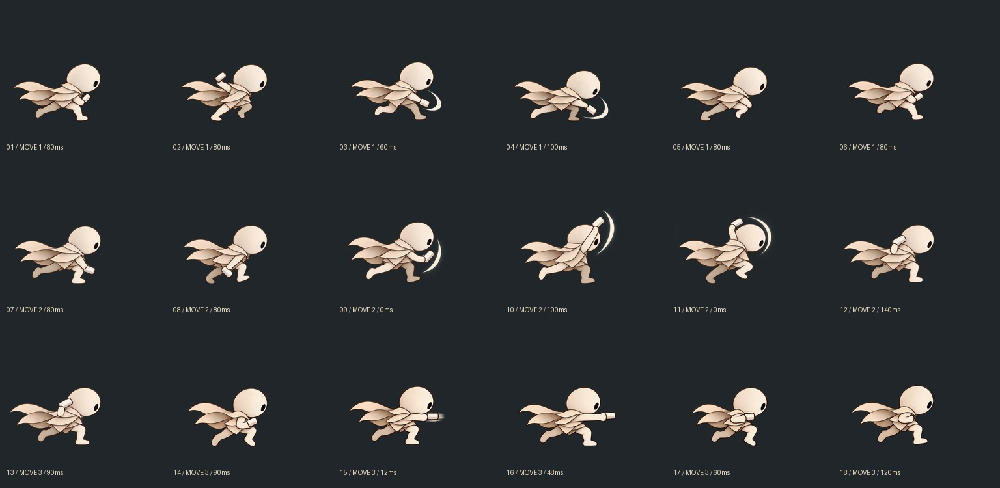

UNFINISHED SKETCHBOOK · MOVE ATTACK 01
달리는 흐름 그대로, 3단 공격.
발을 번갈아 디디며 공격하고, 마지막 타격 뒤에도 달리기가 이어집니다.
불러오는 중…
A / D 이동 · 클릭 / J 공격 · P 일시정지
달리며 3연타 시연
직접 조작
← 이동
이동 →
공격 · 클릭 / J
일시정지
속도
1×
0.5×
0.25×
달리기 → 이동 1·2·3타 → 달리기를 자동 시연합니다.
01 · 달리며 베기
뒤로 밀기 → 전방 타격
02 · 달리며 올려치기
한 장으로 휙 → 0.14초 텀
03 · 전진 찌르기
앞으로 찌르기 → 다음 걸음으로
이동 공격 원화 확인
←
1 / 18
→
18장 전체 보기
